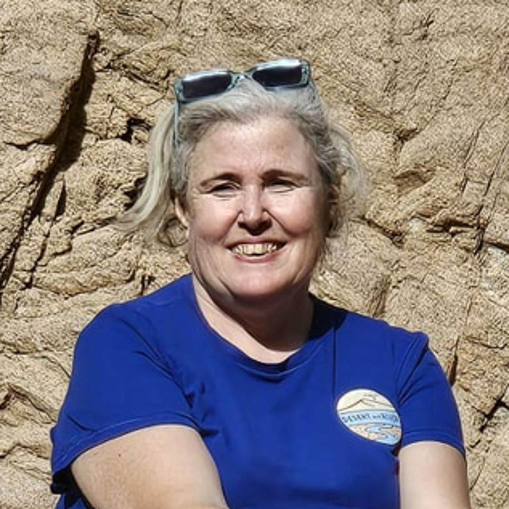
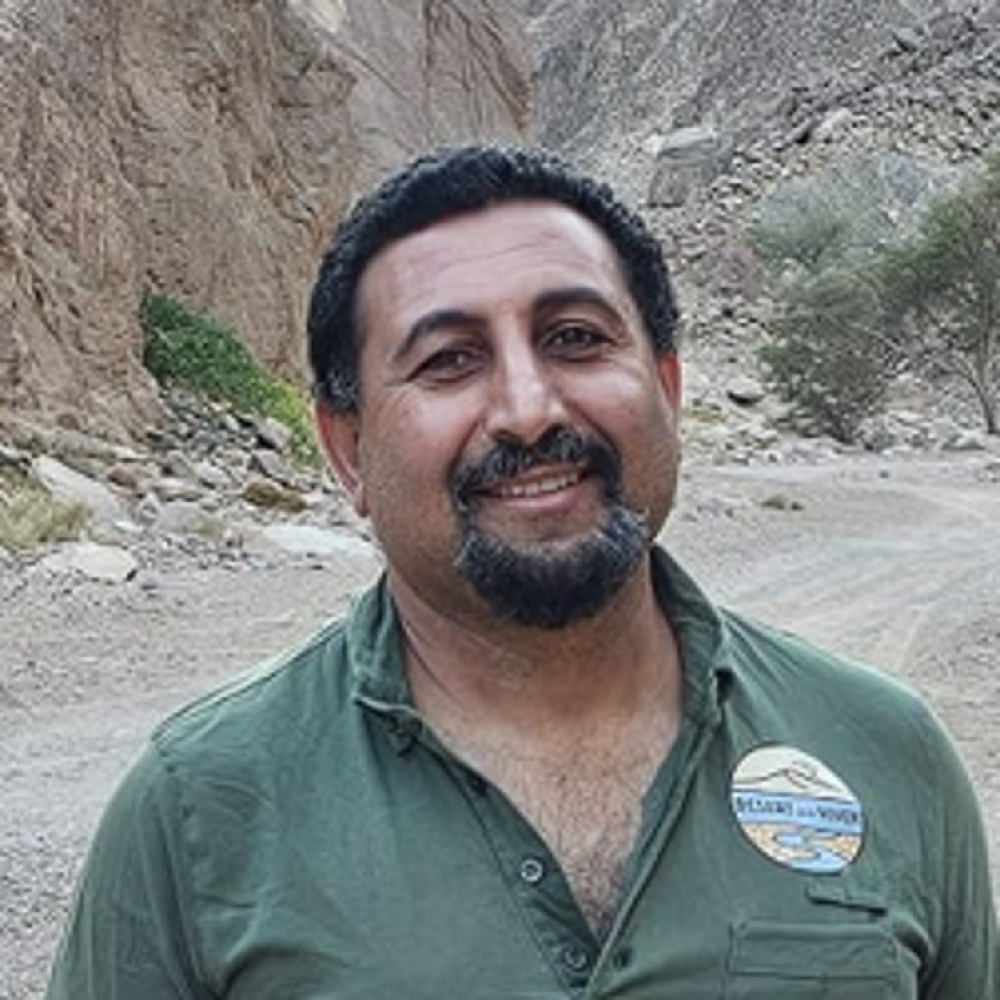

De mensen achter Desert & River
Een gedeeld leven, gevormd door geschiedenis, zorg en de woestijn. Lees het verhaal van Annet, onze gezamenlijke reis en de weg van Joseph.

Geschiedenis stond nooit alleen in boeken
Ik ben in 1974 in Nederland geboren, in een huis vol boeken, verhalen en een diepe liefde voor geschiedenis. Terwijl andere kinderen speelden, was ik gefascineerd door iets wat voor de meeste mensen onzichtbaar bleef: het idee dat er onder onze voeten complete werelden lagen.
Romeinen. Middeleeuwse dorpen. Prehistorische stammen. Lagen tijd die stil in de grond rustten. Als je groef, vond je misschien een munt, een scherf aardewerk, een stukje van iemands leven van eeuwen geleden.
Als mijn leraren vroegen wat ik later wilde worden, antwoordde ik zonder aarzelen: archeoloog.
Ik begreep het vak nog niet helemaal, maar ik begreep verwondering. Ik begreep schatten. Ik begreep de magie van verhalen blootleggen die de tijd had begraven.
Mijn moeder moedigde die droom aan. Ze gaf me een boek over archeologie in Nederland, vol foto's van vondsten uit de grond. Vooral de oude stenen graven in het noorden fascineerden me: de hunebedden, enorme stenen die duizenden jaren geleden zijn neergelegd. Ooit dacht men dat reuzen ze hadden gebouwd. In werkelijkheid zijn het 5000 jaar oude grafkamers. Ze staan nog altijd in het open landschap, stille getuigen van een ver verleden.
Geschiedenis was niet iets uit boeken. Het leefde.
Tegelijk ontdekte ik een andere passie: talen. Woorden kwamen vanzelf, en daarmee kwam een verlangen naar verre plekken. Reizen trok aan me. Dus na mijn studie geschiedenis nam ik een praktisch maar avontuurlijk besluit: ik werd vertaler. Dit was lang voordat iemand het over digitale nomaden had, maar ik droomde al van een leven zonder grenzen. Als ik kon vertalen, kon ik overal ter wereld werken.
En toen kwam Egypte
Tijdens een reis met mijn broer en schoonzus bezocht ik Dahab. Op een avond reden we de woestijn in. We aten onder een eindeloze hemel. De stilte was immens. De sterren voelden zo dichtbij dat je ze bijna kon aanraken. Die nacht veranderde er iets in mij. Twee nachten in de woestijn waren niet genoeg.
Dus boekten we een langere reis met een lokale woestijngids: Joseph.
We reisden diep de Sinaï in, naar de oude tempel van Hathor bij Serabit el-Khadim, een plek die maar weinig bezoekers ooit zien. Daar, midden in de woestijn, omringd door ruïnes ouder dan je je kunt voorstellen, gebeurde er iets bijzonders.
We werden verliefd. Bij de tempel van Hathor, de Oud-Egyptische godin van de liefde. Het voelde bijna alsof het in de stenen geschreven stond.
Toen ik terugkwam in Nederland, bleef mijn hart daar niet. Ik ging terug naar Egypte: naar Joseph, naar de woestijn, naar de geschiedenis verborgen in de bergen van de Sinaï.
We ontdekten dat we dezelfde passie deelden: een diepe liefde voor geschiedenis en voor de stille kracht van de woestijn. En hoe meer we verkenden, hoe meer we iets verrassends beseften: zo weinig mensen kenden de geschiedenis van de Sinaï echt. De oude handelsroutes. De tempels. De inscripties. De vergeten verhalen.
Dus besloten we daar iets aan te doen.
We begonnen met onderzoeken, studeren en de paden zelf te lopen. We wilden niet zomaar woestijntochten aanbieden. We wilden reizen door de tijd aanbieden. Op oude plekken staan en de echte verhalen vertellen. Mensen laten voelen wat wij voelden: dat geschiedenis niet dood is. Ze wacht.
En zo begon ons leven samen: met liefde, met geschiedenis en met de woestijn als getuige.

Reizen voorbij het gewone
We ontmoetten elkaar in de woestijn, bij de tempel van Hathor in de Sinaï, waar Joseph een reis leidde die ik met mijn broer en schoonzus maakte. Niemand van ons wist toen dat die ontmoeting de rest van ons leven zou bepalen.
Die reis bracht ons niet alleen samen, maar wekte ook een diepe liefde voor de woestijn en haar verborgen geschiedenis. Wat begon als een gedeelde fascinatie, werd na verloop van tijd een gedeeld leven, en uiteindelijk een nieuwe manier van gidsen.
Desert & River is uit dat gevoel ontstaan: de wens om reizen aan te bieden met meer tijd, meer waarheid, meer zorg voor dieren en meer respect voor het land zelf.
Joseph was zijn eigen weg al begonnen. In 2005 richtte hij samen met zijn broer Bob King Safari op. In 2008 kwam zijn vrouw Irina erbij en hielp ze het bedrijf verder uit te bouwen. Datzelfde jaar kwam ook Annet, en met z'n vieren gaven we King Safari vorm. Met passie, hard werken en ontelbare dagen in de bergen en dalen van de Sinaï groeide het bedrijf.
In 2011 kwam de revolutie, met onzekerheid en uitdagingen. Maar we bleven. We geloofden in de woestijn en in wat we aan het opbouwen waren. In 2015 begonnen we met z'n vieren ook Sababa Hotel, en in 2020 openden we Lidia Hotel. We bleven groeien, altijd samen.
In 2025 veranderde er iets in ons. Joseph en Annet verlangden weer naar iets persoonlijkers. We houden allebei diep van de woestijn: onder de sterren zijn, door de stilte lopen, de dieren bekijken. We houden van alle dieren: katten, honden, kamelen. En we begonnen goed na te denken over hoe woestijntochten eigenlijk zouden moeten.
Te vaak worden kamelen overladen met water, kampeerspullen en zware voorraden, puur om de kosten van een begeleidend voertuig te besparen. Het ziet er misschien romantisch uit, maar het is zwaar voor de dieren. Voor ons staat welzijn voorop. Op onze reizen met Desert and River nemen we altijd een volgauto mee voor de uitrusting, het eten, het water en de kampeerspullen. De kamelen dragen alleen lichte dekens, zodat gasten comfortabel kunnen zitten. Als we met kamelen reizen, nemen we zelfs goed voer voor ze mee.
En natuurlijk nemen we heerlijk eten voor onszelf mee. Elke avond koken we iets bijzonders boven het open vuur. We maken pizza, verschillende soorten brood en desserts zoals banana split en apple crumble. We bedenken steeds nieuwe recepten die je in de woestijn kunt maken. Samen eten onder de sterren hoort bij de magie.
We bezoeken bekende plekken als gasten dat willen, zoals de Coloured Canyon en de Arada Canyon, maar we weigeren te haasten. We proppen de Coloured Canyon, de White Canyon bij Hodra, de Arada Canyon, de Mushroom Stone en al het andere niet in één gehaaste dag met hier tien minuten en daar vijf. We nemen de tijd. We bekijken inscripties. We voelen de stilte. We slapen onder de sterren. We laten de woestijn beleven, niet consumeren.
We praten ook: over het leven van de bedoeïenen, het dagelijks leven in Egypte, tradities, geschiedenis en de moderne werkelijkheid. Gasten die tijdens een vakantie van twee weken drie dagen met ons doorbrengen, vertellen ons vaak dat die drie dagen het waardevolste deel van hun hele reis waren. Ze leerden meer, zagen meer en beleefden alles intenser dan in alle andere dagen samen.
In 2026 hebben we eindelijk samen Desert and River opgericht, een weerspiegeling van alles waar we in geloven. Onze reizen gaan over waarheid, over de geboorteplaats van het alfabet, 5000 jaar oude graven en 12.000 jaar oude rotskunst, maar ook over zorg, tijd, verbinding en liefde voor dit buitengewone land.
We geven mensen gewoon wat we hebben: onze liefde voor de woestijn, ons respect voor de dieren, onze passie voor geschiedenis en de stille magie van slapen onder een hemel vol sterren.
We werken met vergunningen, volgens de regels, verzekerd en met zorgplicht, en we bereiden alles ruim voor: voertuigen, brandstof, eten, water en een plan B horen altijd bij verantwoord werken in de woestijn.

Van verborgen ruïnes naar de stilte van de woestijn
Ik ben geboren in maart 1977, in een klein dorp bij Sohag. Toen ik nog een klein jongetje was, misschien drie of vier jaar oud, zat mijn wereld al vol geheimen.
Vlak onder onze plaatselijke kerk lag een verborgen wereld vol Oud-Egyptische en vroegchristelijke geschiedenis. Mijn vrienden en ik slopen er vaak naar binnen om te spelen, ook al waarschuwden de ouderen ons altijd weg te blijven.
Ik denk dat mijn liefde voor geschiedenis daar echt begon: in de donkere schaduwen van die ruïnes.
Maar toen ik zes of zeven was, hield het spelen op. Ik ging werken in een metaalfabriek. Het was zwaar, mechanisch werk, te zwaar voor een kind, maar juist die fabriek leerde me van lezen houden. Ik had zo'n hekel aan het vet en het zware werk dat ik wist dat school mijn enige uitweg was.
De droom van 65 piaster
Ik raakte bezeten van boeken. Als ik mijn schoolboeken uit had, wilde ik meer. Toen verdiende ik 25 piaster per week in de fabriek. Mijn vader gaf me op onze vrije dag 5 piaster extra, dus ik had 30 piaster voor de hele week.
De meeste kinderen zouden snoep hebben gekocht, maar ik spaarde elke munt. Als ik twee weken spaarde, kon ik eindelijk een dik boek kopen voor 60 of 65 piaster. Ik deed er een hele week over om het uit te lezen, en die bladzijden waren mijn echte thuis.
Van schoonmaker tot Dahab
Uiteindelijk vertrok ik naar Caïro. Ik deed allerlei banen, op zoek naar mijn weg. Op een dag ontmoette ik iemand die zei: “Kom in Dahab werken.” Ik wist niet eens wat Dahab was. Maar ik probeerde graag nieuwe dingen.
Ik begon helemaal onderaan, als schoonmaker op een camping. Van daaruit werkte ik me op tot receptionist, en uiteindelijk werd ik manager. Ik reisde voor mijn werk overal naartoe, naar Caïro, Luxor en Aswan, en leerde elk onderdeel van de toerismewereld kennen.
De woestijn vinden, en Annet
In 2005 kwam mijn broer Bob erbij en besloten we de sprong te wagen en een eigen bedrijf te beginnen. We gingen tochten de woestijn in leiden. Ik werd verliefd op de stilte daar.
De meeste mensen beseffen niet hoe rijk de Sinaï is: er ligt geschiedenis vanaf de steentijd en van de allereerste alfabetten. Het is een stille, oeroude plek die tot je spreekt.
Tijdens een van die woestijntochten ontmoette ik Annet. We werden verliefd, en toen begon onze echte reis samen.
Als ik terugkijk op de jongen in de metaalfabriek, besef ik dat elke piaster die ik spaarde en elk boek dat ik las me precies hierheen leidde: naar de stilte van de woestijn en een leven dat ik met mijn eigen handen heb opgebouwd.
We haasten de woestijn niet.
Stilte, hitte, hobbelige ritten en eenvoud horen bij de werkelijkheid. We romantiseren het niet, we respecteren het.
Wat we beschermen als we gidsen
Kwetsbare natuur
We beperken bewust de toegang, houden groepen klein en organiseren opruimtochten als dat nodig is.
Banden met de bedoeïenen
We reizen met toestemming, niet omdat we er recht op hebben, en we geven materieel en respectvol iets terug.
Een eerlijke beleving
Geen dagelijkse vertrekken, geen spektakel. Aandacht en luisteren komen eerst.
Veiligheid en zorgplicht
Vergunningen, planning en ruime voorbereiding zijn niet onderhandelbaar.
Begin met een gesprek
Vertel ons hoeveel tijd je hebt, wat je interesseert en hoe je graag reist. We adviseren wat realistisch, respectvol en de moeite waard is.
Desert & River
Reis dieper de Sinaï in met reizen op maat, culturele verdieping en echte lokale verbinding.